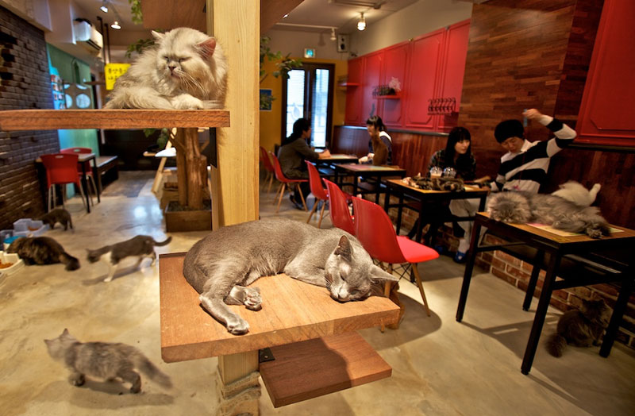

Catnip Cafe
The Catnip Cafe is bringing a much needed pairing to the Los Gatos area: freshly ground, high-quality coffee and our favorite, furry, feline friends.
Read, Relax, and Cuddle
Enjoy your coffee with a good book in one of our cozy reading nooks and enjoy the company of a cuddly companion.
"Cat"ffeinate
Our coffee is ethically traded and ground fresh daily for a delicious taste that's only made better with the adorable company. We offer a variety of beverages for every time of day, including:
- Espresso
- Lattes and Mochas
- Iced Coffees and Cold Brews
- Juice Bar and Smoothies
- "Purr"fectly Mixed Drinks